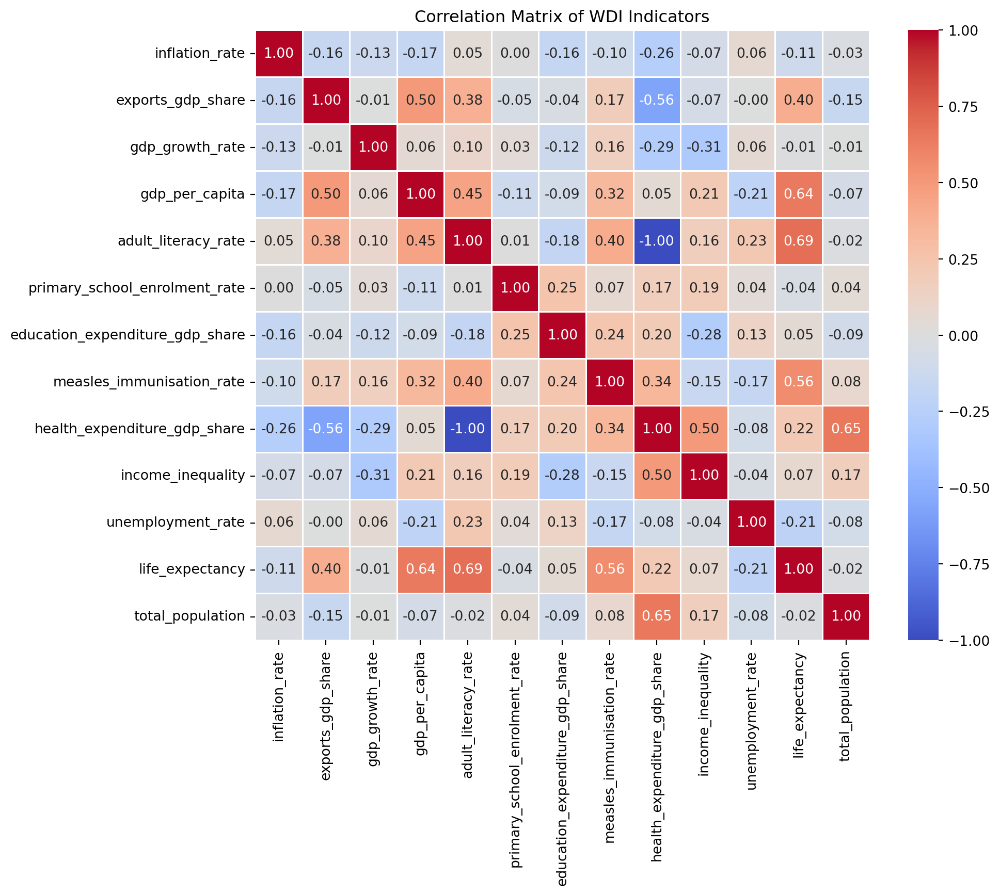

2025-02-25
This report analyzes key World Development Indicators (The World Bank Group 2025) from 2022, focusing on the relationships between life expectancy and key economic, education, and health factors.
As shown in Figure 1, the correlation matrix suggests that:
Higher GDP per capita, literacy rate, and immunization rate are linked to higher life expectancy.
| Statistic | Life Expectancy | GDP per Capita | Literacy Rate | Immunization Rate |
|---|---|---|---|---|
| Mean | 72.42 | 20520.34 | 80.97 | 84.10 |
| Min | 52.99 | 250.63 | 27.28 | 33.00 |
| Max | 85.38 | 226052.00 | 100.00 | 99.00 |
The 10 countries with the lowest measles immunization rates have immunization levels below 55%, making them more vulnerable to measles outbreaks and other associated health risks.
There is a clear positive relationship between GDP per capita and both life expectancy and literacy rate. Countries with higher GDP per capita generally have longer life expectancy and higher literacy rates. However, some low-GDP countries still achieve high literacy.
Is there a statistically significant difference in life expectancy between countries with higher and lower GDP per capita, literacy rates, and immunization rates?
| Indicator Compared | T-Statistic | P-Value | Conclusion |
|---|---|---|---|
| High vs. Low GDP per Capita | 13.643 | <0.001 | Significant difference in life expectancy |
| High vs. Low Literacy Rate | 6.105 | <0.001 | Significant difference in life expectancy |
| High vs. Low Immunization Rate | 7.953 | <0.001 | Significant difference in life expectancy |
As shown in Table 2, all p-values are < 0.001, suggesting strong statistical significance.
| Dep. Variable: | life_expectancy | R-squared: | 0.587 |
| Model: | OLS | Adj. R-squared: | 0.561 |
| Method: | Least Squares | F-statistic: | 22.74 |
| Date: | Wed, 26 Feb 2025 | Prob (F-statistic): | 2.65e-09 |
| Time: | 00:55:45 | Log-Likelihood: | -154.15 |
| No. Observations: | 52 | AIC: | 316.3 |
| Df Residuals: | 48 | BIC: | 324.1 |
| Df Model: | 3 | ||
| Covariance Type: | nonrobust |
| coef | std err | t | P>|t| | [0.025 | 0.975] | |
| const | 43.3817 | 4.065 | 10.673 | 0.000 | 35.209 | 51.554 |
| gdp_per_capita | 0.0002 | 8.77e-05 | 2.392 | 0.021 | 3.34e-05 | 0.000 |
| adult_literacy_rate | 0.1907 | 0.045 | 4.272 | 0.000 | 0.101 | 0.280 |
| measles_immunisation_rate | 0.1013 | 0.047 | 2.178 | 0.034 | 0.008 | 0.195 |
| Omnibus: | 12.900 | Durbin-Watson: | 1.935 |
| Prob(Omnibus): | 0.002 | Jarque-Bera (JB): | 13.809 |
| Skew: | -1.037 | Prob(JB): | 0.00100 |
| Kurtosis: | 4.438 | Cond. No. | 6.37e+04 |
The regression model provides insights into the predictors of life expectancy. The model explains approximately 58.7 percent of the variability in life expectancy.
All GDP per capita, adult literacy rate, and measles immunization rate are statistically significant predictors of life expectancy, with p-values less than 0.05.
The coefficients of the model suggest that:
The exploratory data analysis highlights that GDP per capita, adult literacy rate, and measles immunization rate are associated with life expectancy, but this does not imply a direct cause-and-effect relationship.